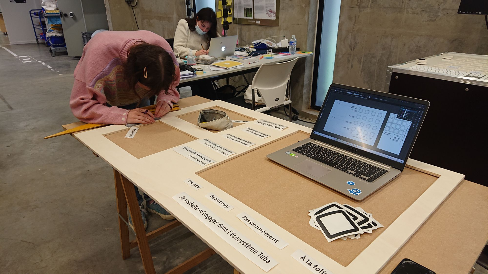
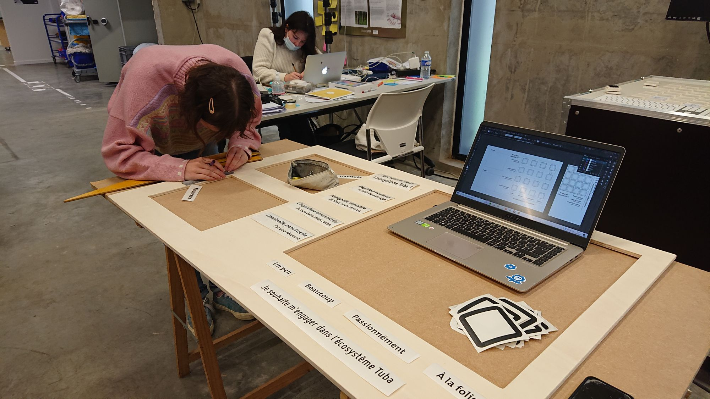

Brickàdata
Data visualisation - Bio-inspiration
UrbanLab Erasme : Dispositif permettant de visualiser les usages du tiers-lieu Tubà
Arduino, Processing, Web
Un rituel pour instaurer des points de contact
Dans le cadre du Workshop Bio-inspiré, notre groupe a travaillé autour de la problématique suivante : Tubà ne connaît pas assez les usagers de son espace coworking. Il y a un réel besoin de créer du lien et des interactions. Notre dispositif inspiré du principe de l’écotone, du rituel, mais aussi du processus cyclique permet de visualiser les usages du lieu, chaque semaine. En plaçant son cube, on conscientise nos motivations et à quel point on souhaite s’investir dans l’écosystème. On peut aussi utiliser une plateforme qui recense les projets et les propositions des usagers.
 
